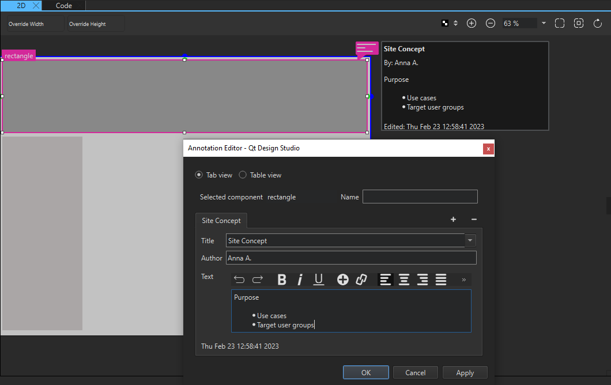
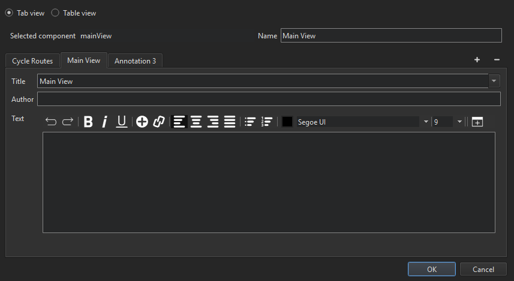

Annotating Designs
You can submit your designs to review or further development as QML files. You can annotate your designs to provide reviewers or developers with additional information about them. You can add global annotations that apply to the whole file or annotate individual components.
An annotation consist of an annotation name and one or several comments. The comments have a title, author, and comment text.
To add or edit global annotations, right-click in the 2D or Navigator view and select Edit Annotations.
Global annotations have an additional status property, which enables you to indicate whether you are still working on the design, you have submitted it to review, or it can be considered done. To set the status, select Add Status.

Annotations are saved in the end of QML files when you save the file. They do not affect the QML performance in any way.
Annotating Components
To add annotations to components:
- Select the component to annotate in Navigator or in the 2D view.
- In Properties, select Add Annotation to open Annotation Editor.

- The Selected Item field displays the ID of the component.
- In the Name field, enter a free-form text that describes the component.
- In the Title field, enter the text to display in the tab for this comment.
- In the Author field, enter the author's name.
- In the Text field, enter the comment text.
- Select OK.
To add more comments about the component, select the  (Add Comment) button.
(Add Comment) button.
To remove the active comment, select the  (Remove Comment) button. To remove the annotation, right-click the annotation icon, and then select Remove Annotation.
(Remove Comment) button. To remove the annotation, right-click the annotation icon, and then select Remove Annotation.
To view the annotations in table format, select Table view.
To edit annotations, select Edit Annotation in the context menu of the component.